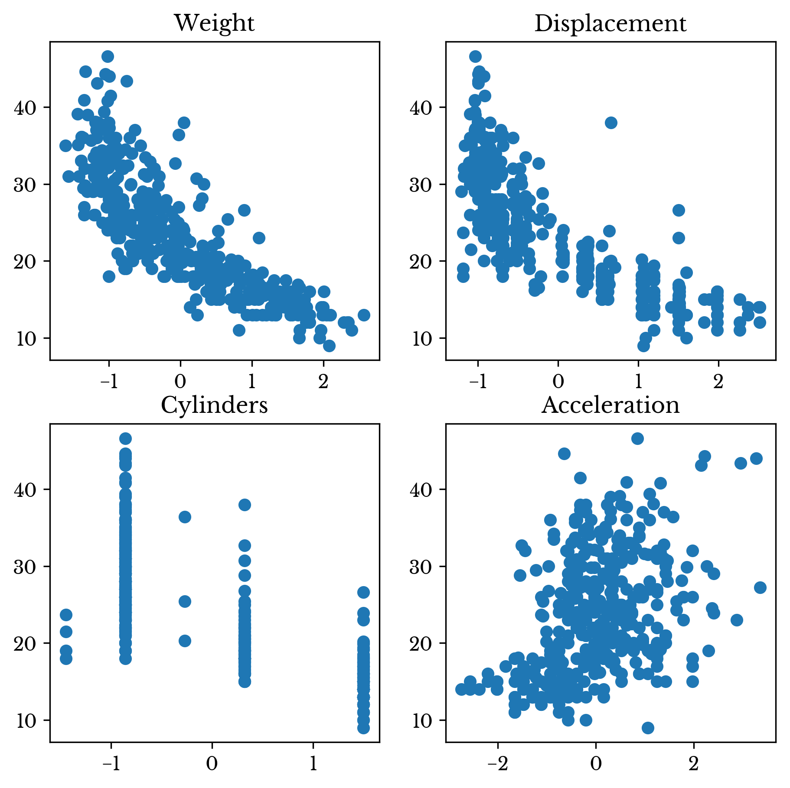
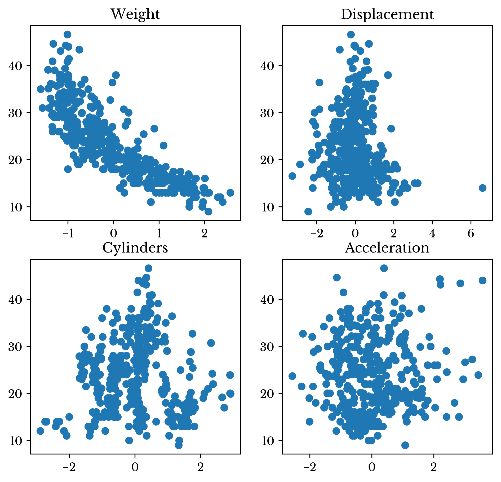

\[\displaylines{\textbf{B}^{*}_{i} = \textbf{A}_{i} - \sum\limits_{j=1}^{i-1}{P(\textbf{B}^{*}_{j}, \textbf{A}_{i})}\\ \textbf{B}_{i}=\frac{\textbf{B}^{*}_{i}}{||\textbf{B}^{*}_{i}||}}\] for \[\displaylines{i = 1,2,\ldots,n}\ ,\]
where,\[\displaylines{P(\textbf{u}, \textbf{v}) = \frac{\langle \textbf{u},\textbf{v}\rangle}{\langle \textbf{u},\textbf{u}\rangle}\textbf{u} }\]
is the projection of v onto u, and \(\langle \textbf{u},\textbf{v}\rangle\) denotes the inner product of these vectors\[\displaylines{\textbf{x} \cdot \textbf{y} = \sum\limits_{i=1}^{n}{x_{i}y_{i}}}\]
If the dot product of two vectors x and y is 0, then the vectors are orthogonal to each-other. This implies that the angle between the two vectors is 90°. After performing the Gram-Schmidt process, the inner-product of any pair of columns in the transformed matrix is 0. Thus, the resulting matrix is orthogonal.\[\displaylines{C(\textbf{x}, \textbf{y})=\frac{1}{2n^{2}}\sum\limits_{i=1}^{n}\sum\limits_{j=1}^{n}{(x_i-x_j)(y_i-y_j)} }\]
as the covariance of the vectors x and y. The above definition is used for convenience despite being more inefficient than the typical definition using the vector means.\[\displaylines{C(\textbf{x}, \textbf{y})=\frac{1}{2n^{2}}\sum\limits_{i=1}^{n}\sum\limits_{j=1}^{n}{(x_i-x_j)(y_i-y_j)} \\ = \frac{1}{2n^{2}}\sum\limits_{i=1}^{n}\sum\limits_{j=1}^{n}{(y_i-y_j)(x_i-x_j)} \\ = C(\textbf{y}, \textbf{x})}\]
\[\displaylines{C(a\textbf{x}, \textbf{y})=\frac{1}{2n^{2}}\sum\limits_{i=1}^{n}\sum\limits_{j=1}^{n}{(ax_i-ax_j)(y_i-y_j)} \\ = \frac{1}{2n^{2}}\sum\limits_{i=1}^{n}\sum\limits_{j=1}^{n}{a(x_i-x_j)(y_i-y_j)} \\ = a \times C(\textbf{x}, \textbf{y})}\]
\[\displaylines{C(\textbf{x}+\textbf{z}, \textbf{y})=\frac{1}{2n^{2}}\sum\limits_{i=1}^{n}\sum\limits_{j=1}^{n}{((x_i+z_i)-(x_j+z_j))(y_i-y_j)} \\ = \frac{1}{2n^{2}}\sum\limits_{i=1}^{n}\sum\limits_{j=1}^{n}{[(x_i-x_j)+(z_i-z_j)](y_i-y_j)} \\ = \frac{1}{2n^{2}}\sum\limits_{i=1}^{n}\sum\limits_{j=1}^{n}{[(x_i-x_j)(y_i-y_j)+(z_i-z_j)(y_i-y_j)]} \\ = \frac{1}{2n^{2}}\sum\limits_{i=1}^{n}\sum\limits_{j=1}^{n}{(x_i-x_j)(y_i-y_j)}+\frac{1}{2n^{2}}\sum\limits_{i=1}^{n}\sum\limits_{j=1}^{n}{(y_i-y_j)(z_i-z_j)} \\ = C(\textbf{x}, \textbf{y}) + C(\textbf{y}, \textbf{z})}\]
\[\displaylines{C(\textbf{x}, \textbf{x})=\frac{1}{2n^{2}}\sum\limits_{i=1}^{n}\sum\limits_{j=1}^{n}{(x_i-x_j)(x_i-x_j)} \\ = \frac{1}{2n^{2}}\sum\limits_{i=1}^{n}\sum\limits_{j=1}^{n}{(x_i-x_j)^2}\geq 0 }\]
Unfortunately, this fourth condition is only partially true. The covariance of any constant vector is 0 and so the vector being 0 is a sufficient but not a necessary condition. Thus, covariance is positive semi-definite and not positive-definite as required.If \[\displaylines{\bar{\textbf{A}}_{i}=0 }\] for \[\displaylines{i = 1,2,\ldots,n}\]
Then \[\displaylines{\bar{\textbf{B}}_{i}=0 }\] for \[\displaylines{i = 1,2,\ldots,n}\ .\]
Proof: By definition, \(\textbf{B}^{*}_{0}=\textbf{A}_{0}\) is centered, since \(\textbf{A}_{0}\) is centered. The proof proceeds using mathematical induction. Using the definition of \(\textbf{B}_{i}\) and the mean,\[\displaylines{\textbf{B}_{i} = (\textbf{A}_{i} - \sum\limits_{j=1}^{i-1}{\frac{\langle \textbf{B}^{*}_{j}, \textbf{A}_{i} \rangle}{\langle \textbf{A}_{i}, \textbf{A}_{i} \rangle}\textbf{B}^{*}_{j}})/||\textbf{B}^{*}_{i}|| }\ ,\]
and so,\[\displaylines{\bar{\textbf{B}}_{i} = (\frac{1}{m}\sum\limits_{k=1}^{m}{(\textbf{A}_{ki} - \sum\limits_{j=1}^{i-1}{\frac{\langle \textbf{B}^{*}_{j}, \textbf{A}_{i} \rangle}{\langle \textbf{A}_{i}, \textbf{A}_{i} \rangle}\textbf{B}^{*}_{kj}})})/||\textbf{B}^{*}_{i}||\\ = \frac{1}{||\textbf{B}^{*}_{i}||}\frac{1}{m}\sum\limits_{k=1}^{m}{\textbf{A}_{ki}} - \frac{1}{||\textbf{B}^{*}_{i}||}\frac{1}{m}\sum\limits_{k=1}^{m}{\sum\limits_{j=1}^{i-1}{\frac{\langle \textbf{B}^{*}_{j}, \textbf{A}_{i} \rangle}{\langle \textbf{A}_{i}, \textbf{A}_{i} \rangle}\textbf{B}^{*}_{kj}}}\\ = 0 - \frac{1}{||\textbf{B}^{*}_{i}||}\frac{\langle \textbf{B}^{*}_{j}, \textbf{A}_{i} \rangle}{\langle \textbf{A}_{i}, \textbf{A}_{i} \rangle}\sum\limits_{j=1}^{i-1}{\frac{1}{m}\sum\limits_{k=1}^{m}{\textbf{B}^{*}_{kj}}}\\ = 0 - \frac{1}{||\textbf{B}^{*}_{i}||}\frac{\langle \textbf{B}^{*}_{j}, \textbf{A}_{i} \rangle}{\langle \textbf{A}_{i}, \textbf{A}_{i} \rangle}\sum\limits_{j=1}^{i-1}{\bar{\textbf{B}}^{*}_{j}}\\ = 0 - 0 = 0 }\ .\]
In the above, \(\bar{\textbf{A}}_{i}\) indicates the mean of column \(\textbf{A}_{i}\) and \(\textbf{A}_{ki}\) indicates the element in the k-th row and i-th column of the matrix \(\textbf{A}\).In the final step, the induction hypothesis, that \(\bar{\textbf{B}}^{*}_{j}=0\) for \(j<i\), is used. Thus, if the data matrix is centered, the Gram-Schmidt process only operates on centered vectors; the assumption remains valid throughout the process.\[\displaylines{R(\textbf{x}, \textbf{y})=\frac{C(\textbf{x},\textbf{y})}{\sigma_{\textbf{x}}\sigma_{\textbf{y}}} }\]
Where \(\sigma_{\textbf{x}}\) is the standard deviation of x. Thus, the correlation and covariance are equal in this case, since the standardized columns have variance one.| Weight | Displacement | Cylinders | Acceleration | |
|---|---|---|---|---|
| Cylinders | 1.00 | 0.93 | 0.90 | -0.42 |
| Displacement | 0.93 | 1.00 | 0.95 | -0.54 |
| Weight | 0.90 | 0.95 | 1.00 | -0.51 |
| Acceleration | -0.42 | -0.54 | -0.51 | 1.00 |
Table 1: Auto MPG Feature Correlation
The correlation between the variables can easily be computed using pandas: A.corr(). The resulting correlation matrix shown in Table 1.def Cov(X, Y):
return ((X - X.mean()) * (Y - Y.mean())).mean()
def Proj(X, Y, F=Cov):
return X * (F(X, Y) / F(X, X))
def ToUnit(X, F=Cov):
return X / np.sqrt(F(X, X))
def GramSchmidt(A, F=Cov):
B = A.copy()
n = A.shape[1]
for i in range(n):
for j in range(i):
B[:, i] = B[:, i] - Proj(B[:, j], B[:, i], F=F)
B[:, i] = ToUnit(B[:, i], F=F)
return B| Weight | Displacement | Cylinders | Acceleration | |
|---|---|---|---|---|
| Weight | 1.00 | 0.00 | 0.00 | 0.00 |
| Displacement | 0.00 | 1.00 | 0.00 | 0.00 |
| Cylinders | 0.00 | 0.00 | 1.00 | 0.00 |
| Acceleration | 0.00 | 0.00 | 0.00 | 1.00 |
Table 2: Transformed Auto MPG Feature Correlation
The resulting correlation matrix is shown in Table 2. Note that the correlation matrix is diagonal indicating that there is no correlation between the columns. The Gram-Schmidt process successfully decorrelated the data matrix! Figures 1 and 2 show scatter charts of MPG against the four features before and after decorrelation respectively.
Figure 1: Scatter Plots of Original Data Against MPG
A linear regression model fit on the decorrelated data matrix achieves the same \(R^2\) of 0.7007. Further of interest is that the univariate regression coefficients for each column exactly match the multivariate coefficients of the full decorrelated matrix. Also, the sum of the univariate \(R^2\) values equal the multivariate regression \(R^2\). The above are both due to the columns having no linear correlation to each other.
Figure 2: Scatter Plots of Decorrelated Data Against MPG
As can be seen in Table 3, the sum of the \(R^2\) values for the original features is inflated as some variables explain the same variation in MPG.| Feature | Orig. R² | Tran. R² |
|---|---|---|
| Weight | 0.69179 | 0.69179 |
| Displacement | 0.64674 | 0.00618 |
| Cylinders | 0.60124 | 0.00027 |
| Acceleration | 0.17664 | 0.00245 |
| Total | 2.11642 | 0.70070 |
Table 3: Transformed Auto MPG Feature Correlation
While the multivariate and univariate regression coefficients are identical for the decorrelated data, the intercepts are different. However, the multivariate intercept can be derived from the univariate intercepts using the following formula.\[\displaylines{b^{*}=\sum\limits_{i=1}^{n}{{b_i}-(n-1)\bar{Y}} }\]
Where \(b^{*}\) is the multivariate intercept, \(b_i\) is the i-th univariate regression coefficient, \(n\) is the number of columns in the data matrix, and \(\bar{Y}\) is the mean target value.